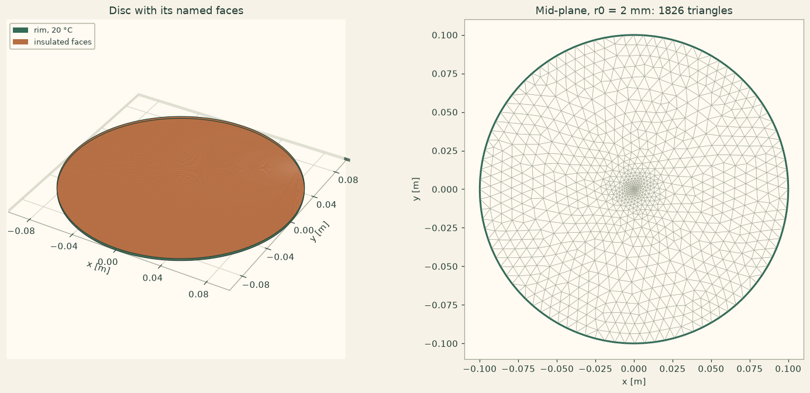

Docs › Examples › Disc heated by a localized source
Heat transfer · 2D
Disc heated by a localized source
A thin steel disc held at 20 °C on its rim and heated by a 10 W Gaussian spot at its centre.
Run locally with OneSimulation. The example downloads are free. Running them requires an activated runtime. Runtime Alpha 0.2.1a7 · CPython 3.13 on macOS (Apple Silicon), Ubuntu 22.04 (x86-64), and Windows x64. Installation and activation · View pilot plans. Scope of the reference checks.

What it computes
OneSimulation reads the disc from a STEP file, cuts it to its mid-plane and solves steady conduction with quadratic triangles graded towards the spot, for four spot radii from 8 mm down to 1 mm. The script that builds the STEP file comes with the notebook.
What it checks
The centre temperature matches the exact exponential-integral solution within 0.012 K for every spot radius (64.78 to 97.88 °C), the temperature 10 mm from the centre within 0.01 K, and the full 10 W leave through the rim.
Geometry
The notebook starts at the import of the CAD file disc_localized_heat_source.step: STEP (AP242), readable by any CAD program, with the names of the faces that the boundary conditions use. Put it next to the notebook.


The geometry script
The script disc_localized_heat_source_geometry.py builds the geometry with the CAD objects of OneSimulation and writes the file. Change a dimension there, run it, and run the notebook again.
"""Geometry of the OneSimulation example "Disc heated by a localized source".
Builds the steel disc, 100 mm in radius and 2 mm thick, with the CAD objects of OneSimulation and
writes disc_localized_heat_source.step. The rim, held at a fixed temperature, is named rim; the two
flat faces form the group faces. The example computes on the mid-plane section of the disc.
"""
from onesim.cad.d3 import Cylinder
disc = Cylinder(radius=0.1, length=0.002)
faces = disc.boundaries
disc = disc.grouped(rim=faces.outer_wall, faces=faces.top | faces.bottom)
disc.save("disc_localized_heat_source.step")The notebook
The complete notebook, cell by cell. Run it to produce the figures and the comparison printout.
A thin steel disc of radius \(R=100\) mm and thickness \(d=2\) mm is heated by a power \(P=10\) W released in a small central spot, for example the focus of a laser or a hot contact, and its rim is held at \(T_0=20\) °C. The spot has a Gaussian profile of radius \(r_0\). The faces are insulated, so the temperature is two-dimensional:
with \(k=50\) W/(m K). Engineers often idealise such a spot as a point source. Its field is logarithmic and infinite at the centre, so the question is how small a finite source must be to look like a point from a given distance, and what peak temperature it really produces.
| boundary | condition |
|---|---|
rim, \(r=R\) | \(T=20\) °C |
| flat faces | insulated (two-dimensional model) |
The disc comes from the CAD file disc_localized_heat_source.step; the script disc_localized_heat_source_geometry.py builds it with the CAD objects of OneSimulation. The model is its mid-plane section.
Reference. Integrating the radial heat equation (Carslaw and Jaeger, Conduction of Heat in Solids, 1959) gives
with the exponential integral \(E_1\). A few spot radii away from the centre this is the point-source field \(T_0+P/(2\pi kd)\,\ln(R/r)\); the centre temperature \(T_0+P/(4\pi kd)\,[\ln(R^2/r_0^2)+\gamma]\) grows without bound as the spot shrinks.
import numpy as np
from onesim.cad.exchange import load
from onesim.materials import IsotropicSolid
from onesim.meshing import TriangularMesher
from onesim.numerics import Numerics
from onesim.numerics.fem import FiniteElement, Lagrange
from onesim.numerics.linear import SparseDirect
from onesim.physics.heat_transfer import FixedTemperature, HeatConduction
from onesim.simulation import Problem, Simulation
from onesim.visualization import plots, theme
from scipy.special import exp1
theme.set()Geometry and mesh
load returns the disc with its named faces; section returns the mid-plane disc, whose rim keeps the name outer_wall of the cylindrical face. For each spot radius the triangles shrink from 8 mm at the rim to a quarter of the spot radius at the centre.
disc = load("disc_localized_heat_source.step")
faces = disc.boundaries
radius, thickness = disc.size[0] / 2, disc.size[2]
region = disc.section((0, 0, 1), origin=(0, 0, thickness / 2))
spots = [0.008, 0.004, 0.002, 0.001]
meshes = {
r0: TriangularMesher(
target_size=0.008,
size_field=lambda p, r0=r0: np.minimum(
0.008, r0 / 4 + 0.15 * np.hypot(p[:, 0], p[:, 1])
),
).generate(region)
for r0 in spots
}
fig = plots.figure(1, 2, size=(14, 6))
plots.geometry(
disc,
selection={"rim, 20 °C": faces.rim, "insulated faces": faces.faces},
labels=False,
camera=plots.Camera(elevation=35, azimuth=-60),
title="Disc with its named faces",
ax=fig[0],
)
plots.mesh(
meshes[0.002],
groups=("all",),
legend=False,
title=f"Mid-plane, r0 = 2 mm: {meshes[0.002].cell_count} triangles",
ax=fig[1],
)
plots.show()Model
The source is a heating density given as a function of position; the same model is solved for the four spot radii with quadratic triangles.
power, k, rim = 10.0, 50.0, 20.0
steel = IsotropicSolid(
density=7850.0,
specific_heat_capacity=460.0,
thermal_conductivity=k,
youngs_modulus=2.1e11,
poisson_ratio=0.3,
thermal_expansion_coefficient=1.2e-5,
)
numerics = Numerics(
spatial=FiniteElement(element=Lagrange(order=2)), linear_solver=SparseDirect()
)
spot_heating = (
lambda r0: lambda x, y: power
/ (np.pi * r0**2 * thickness)
* np.exp(-(x**2 + y**2) / r0**2)
)
models = {
r0: HeatConduction(domain=region.domain(), material=steel, heating=spot_heating(r0))
for r0 in spots
}
fields = {
r0: Simulation(
problem=Problem(
name="Disc with a localized source",
geometry=region,
physics=(model,),
boundary_conditions=(
FixedTemperature(
boundary=region.boundaries.outer_wall, physics=model, value=rim
),
),
),
mesh=meshes[r0],
numerics=numerics,
)
.solve_stationary()
.field(model.temperature)
for r0, model in models.items()
}Results
The centre temperature for each spot, the temperature 10 mm from the centre (nearly the same for every spot, as for a point source), and the heat leaving through the rim.
exact = lambda r, r0: rim + power / (4 * np.pi * k * thickness) * (
np.log(radius**2 / np.maximum(r, 1e-9) ** 2)
- exp1(np.maximum(r, 1e-9) ** 2 / r0**2)
+ exp1(radius**2 / r0**2)
)
point = lambda r: rim + power / (2 * np.pi * k * thickness) * np.log(radius / r)
print(
"spot radius [mm] T(0) sim. [°C] T(0) exact [°C] T(10 mm) sim. [°C] T(10 mm) exact [°C] heat through rim [W]"
)
for r0, field in fields.items():
centre, ten = field.evaluate([[0.0, 0.0], [0.01, 0.0]]).ravel()
print(
f"{1e3 * r0:16.0f} {centre:16.3f} {exact(0.0, r0):17.3f} {ten:20.3f} {exact(0.01, r0):21.3f} "
f"{field.boundary_flux(region.boundaries.outer_wall) * thickness:20.4f}"
)Figure
The temperature in the disc for the 2 mm spot, and the radial profiles for all spots on a logarithmic radius axis, where the point-source field is a straight line.
r = np.geomspace(2e-4, radius, 300)
fig = plots.figure(1, 2, size=(15, 6))
plots.surface(
fields[0.002],
limits=(rim, 95),
contours=16,
subdivisions=3,
xlimits=(-0.03, 0.03),
ylimits=(-0.03, 0.03),
xlabel="x [m]",
ylabel="y [m]",
label="T [°C]",
title="Temperature around the 2 mm spot",
ax=fig[0],
)
plots.line(
y={
f"r0 = {1e3 * r0:.0f} mm": (
1e3 * r,
field.evaluate(np.column_stack((r, np.zeros_like(r)))).ravel(),
)
for r0, field in fields.items()
},
reference={"point source": (1e3 * r, point(r))},
scale="logx",
xlabel="radius r [mm]",
ylabel="T [°C]",
title="Radial profiles (dashed: point source)",
legend="upper right",
ax=fig[1],
)
plots.show()Going further
Replace the fixed rim temperature by convection to air (ConvectiveHeatFlux), or let the faces lose heat as well: the profile then follows the modified Bessel functions of a radial fin. A moving spot turns this into the classical laser-heating problem.